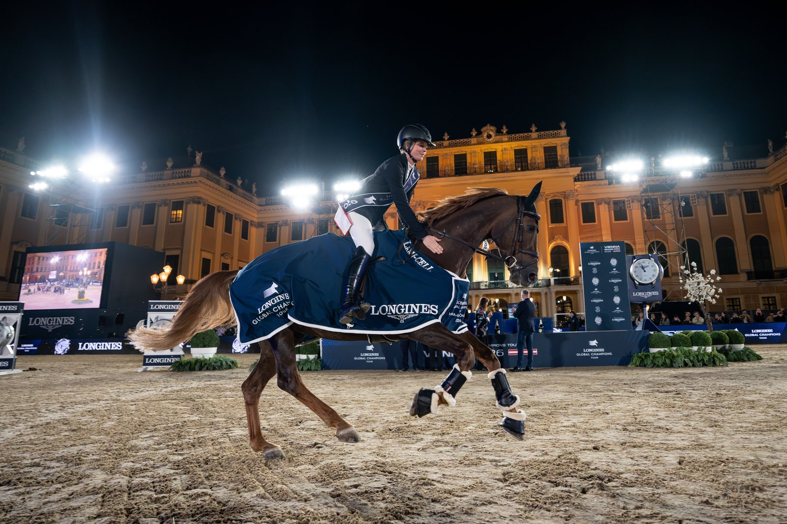

Viena estrena doma internacional junto al salto de la LGCT en el Ehrenhof de Schönbrunn
Viena se convierte esta semana en la primera cita del Longines Global Champions Tour que combina el circuito de salto con doma internacional.

Cesión editorial autorizada (LGCT)
Viena se convierte esta semana en la primera cita del Longines Global Champions Tour que combina el circuito de salto con doma internacional. Del 24 al 27 de septiembre, el Ehrenhof del Palacio de Schönbrunn acoge cuatro días de deporte con la novedad de un Grand Prix CDI y su Kür, además del Grand Prix de salto de la LGCT y de la prueba por equipos de la Global Champions League (GCL).
La organización ha reforzado la parada austríaca respecto a ediciones anteriores. El programa ecuestre se abre el jueves, pero el bloque de doma se concentra el viernes, con el Grand Prix CDI, y el sábado, con la Freestyle (Kür al son de la música). Es la primera vez que Viena incorpora una prueba internacional de doma dentro de la LGCT, un salto cualitativo para un circuito históricamente centrado en el salto.
El plato fuerte sigue siendo, no obstante, el Grand Prix de salto de la LGCT, con los principales jinetes del circuito ajustando la clasificación general antes de las paradas finales de Roma, El Cairo y Rabat, y de los GC Playoffs de Riad. La prueba por equipos de la GCL completa el fin de semana con puntos decisivos en la tabla de la liga por equipos.
El entorno del Schönbrunn Palace, patrimonio de la Unesco, añade un componente cultural al evento: un día dedicado a los niños, exhibiciones de la Spanish Riding School vienesa, demostraciones de equitación de trabajo y una ceremonia de entrega de premios con el tenor Paolo Scariano y un coro infantil de un centenar de voces.
— Redacción de Hípica al Día